Projects
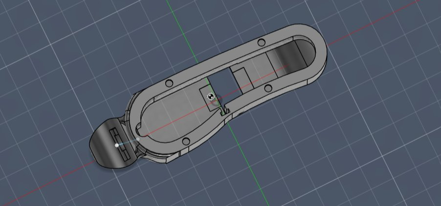
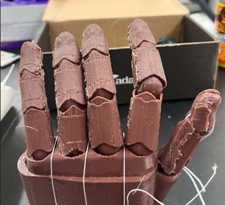
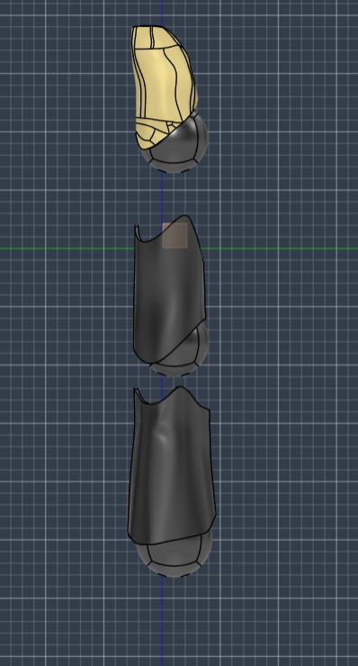
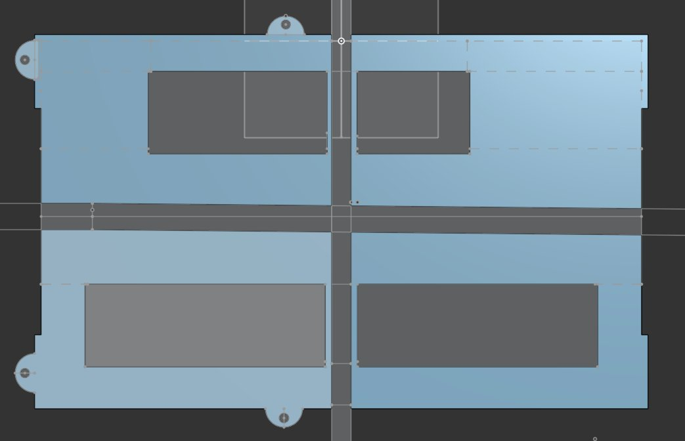
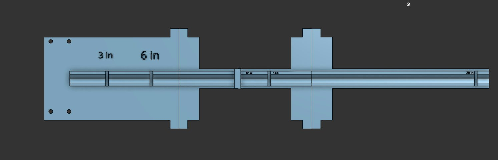
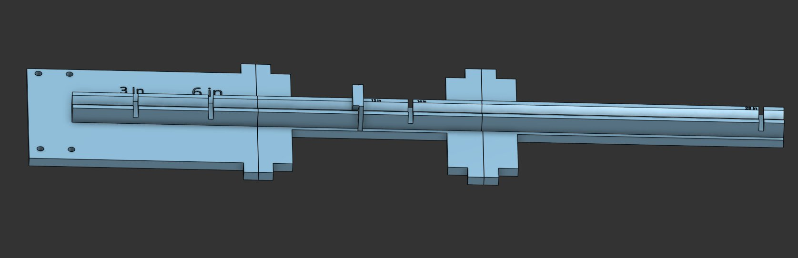

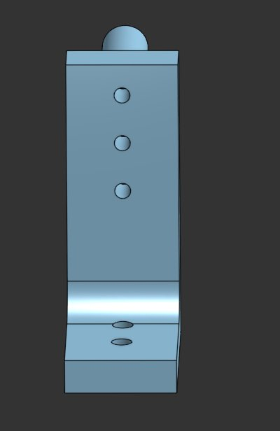
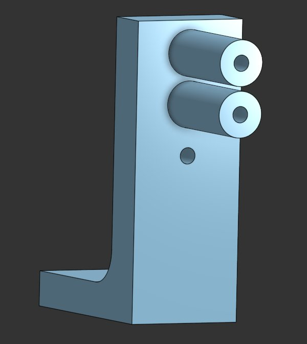
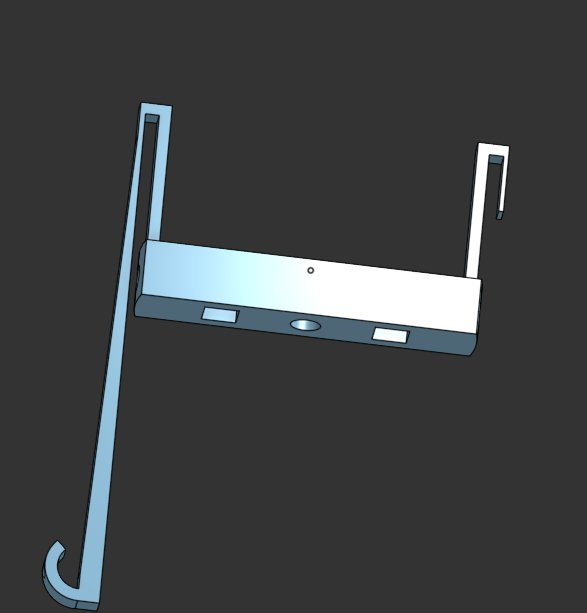
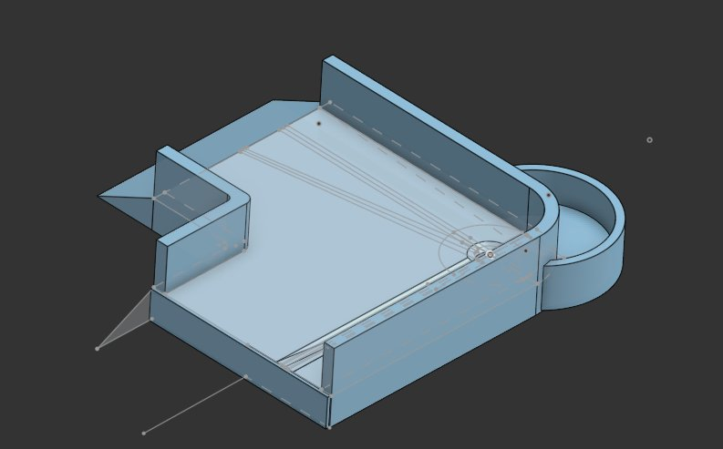
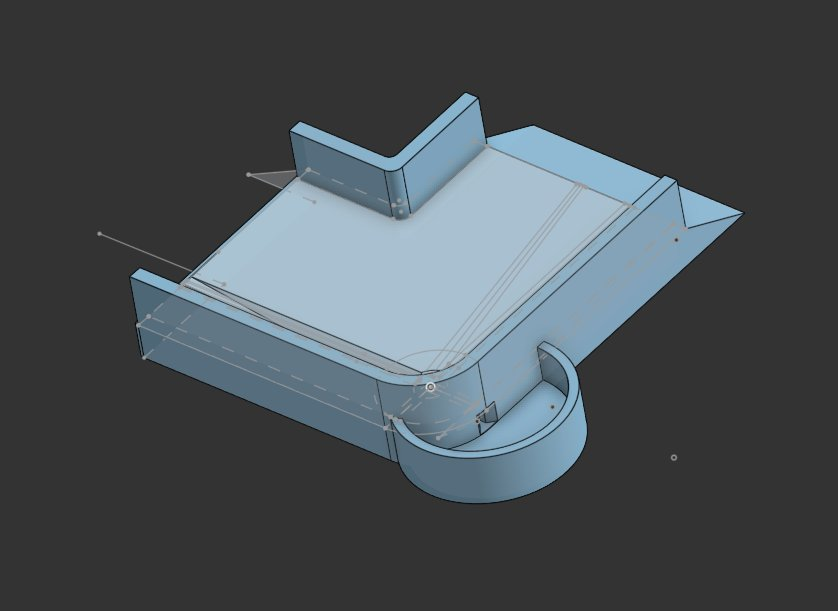

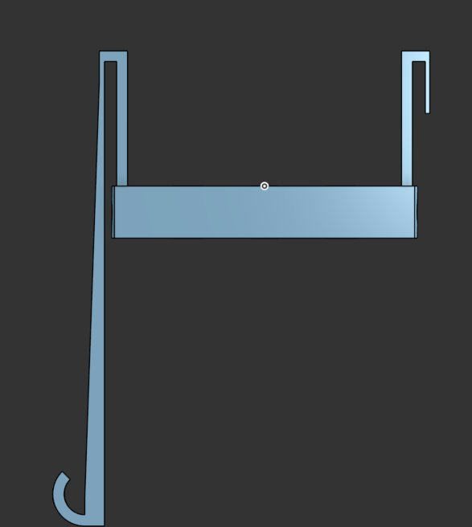
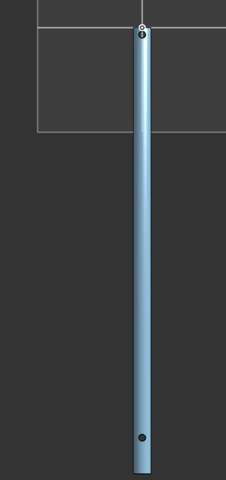
Mechanical Engineer
I build things and figure out why they don’t work. My background spans production fixture design, electromechanical test systems, and independent R&D — with a consistent focus on taking problems from first principles through physical validation.












